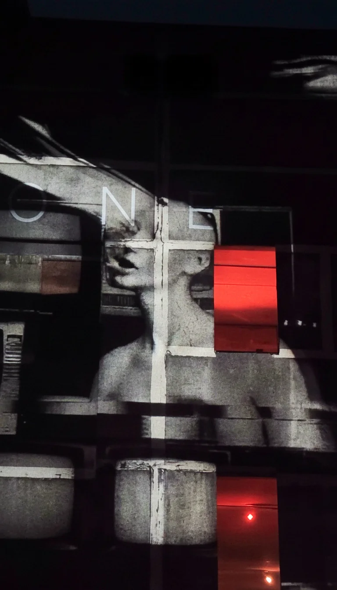
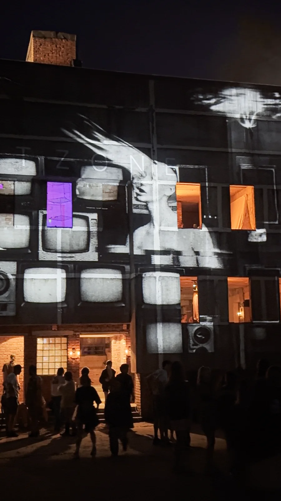

OUTLINE
Фестиваль OUTLINE · 2025
Мэппинг на здание.
Фотографии и изображения

Проекция на фасад здания на фестивале OUTLINE.

Мэппинг в пространстве фестиваля.
Видео
Фрагмент 1. Открыть отдельно.
Фрагмент 2. Открыть отдельно.
Фрагмент 3. Открыть отдельно.
Фрагмент 4. Открыть отдельно.